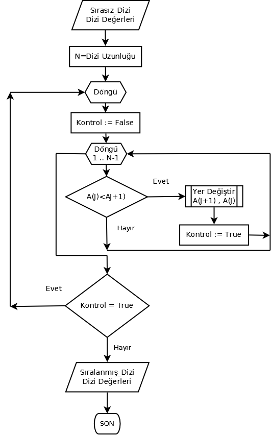
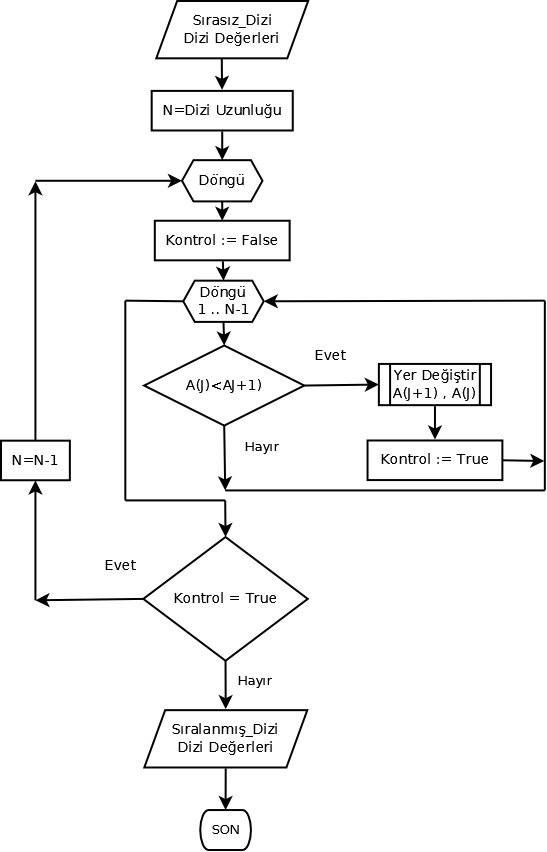
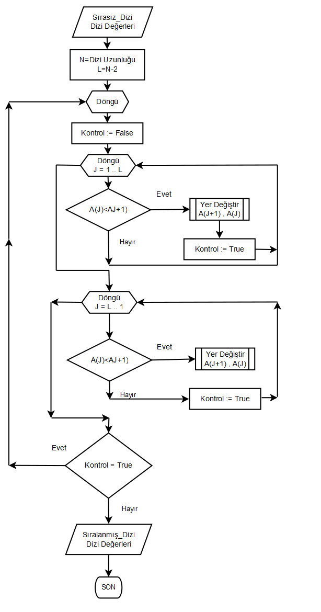
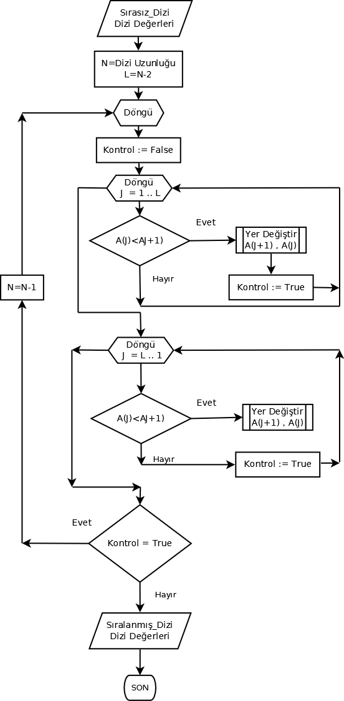

Ada Programlama Dili Temelleri
Bölüm 7
Bileşik Veri Tipleri
Bölüm 7 Sayfa 1
7.1- Array (Dizi) Veri Tipi
Diziler verilerin işlenmesinde önemli bir işleve sahiptir. Ada dizileri, PERL ve JavaScript gibi bağlantılı listeler (linked lists) değil gerçek dizilerdir. Ada dizileri sadece bir tip veri içerebilir ve tanımlandıkları eleman sayısından daha fazla eleman alamazlar. Yani Ada dizilerinde dizi yapısı sakınımı sağlanır ve veri tipi tekcinsliliği korunur. Ada dizileri çok boyutlu olabilirler.
Ada 2102 spesifikasyonunda dizilerin tanım için, aşağıdaki yöntem belirtilmiştir:
array_type_definition ::= unconstrained_array_definition | constrained_array_definition
unconstrained_array_definition ::= array(index_subtype_definition {, index_subtype_definition}) of component_definition
index_subtype_definition ::= subtype_mark range <>
constrained_array_definition ::= array (discrete_subtype_definition {, discrete_subtype_definition}) of component_definition
discrete_subtype_definition ::= discrete_subtype_indication | range
component_definition ::= [aliased] subtype_indication|[aliased] access_definition
olarak verilmiştir. Dizilerin indis kısıtlamaları için belirtilen sözdizimi,
index_constraint ::= (discrete_range {, discrete_range})
discrete_range ::= discrete_subtype_indication | range
şeklindedir. Tüm bu terimlerin anlamlarını birlikte inceleyeceğiz.
Ada programlama dilinde diziler, veri tipleri ile, boyutları ile, indis veri tipleri ve kapsamı ile içerik veri tipi ve kapsamı ile birbirinden farklandırılır. Eğer bir dizi nesnesinin veri tipi, indis tip ve kapsamı, içerik tip ve kapsamı başka bir dizi nesnesi ile aynı ise bu iki dizi nesnesi türdeş aksi halde farklı iki nesne olarak kabul edilir.
Diziler, nisbeten basit kullanımlar için, öntanımlı dizi (array) veri tipinin indis veri tipi ve tipi ve kapsamı, içerik veri tipi ve varsa kısıtları belirtilerek tanımlanan öntanımlı isimsiz (anonim) dizi tipinin uygulama nesneleri olarak tanımlanabildikler. Daha gelişkin amaçlar için kullanıcılar tarafından özgün bir alt dizi veri tipi adı verilerek ve bu özgün alt tipin uygulama nesneleri de tanımlanabilirler. Özgün bir dizi veri tipi tanımı bu tipin ilk alt veri tipini de tanımlamış olur.
Dizilerin indis veri tipleri ayrık (discrete) veri tiplerinden birisi olmalıdır. Bu ya bir tamsayı tipi olabilir veya sayılabilir (enumeration) tipi bir veri tipi olabilir. Dizi indisleri öntanımlı olarak 1 den başlar. Fakat negatif değerler dahil istenilen değerler alabilir. Dizilerin indisleri çok ender durumlarda negatif değerlere gereksinme duyabilir, ayrıca dizilerin indislerinin 0 dan başlatılmaması da sayma hatalarının önlenmesi için iyi bir yöntemdir. Bu nedenle, genel olarak öntanımlı Positive veri tipi, dizi indisi veri tipi için iyi bir seçim sayılabilir. Fakat, istenirse, modüler veri tipi gibi diğer tamsayı veri tipleri veya sayısal olmayan sayılabilir veri tipleri, dizi indislerinin tanımı için kullanılabilir.
Dizilerin uzunluğunu, yani içerebilecekleri eleman sayısını, dizilerin indis kapsam aralığının genişliği belirler. Başlangıçta tanımlanan dizi uzunluğu, program sırasında aşılamaz, yani, tanımlanmış elaman sayısı aşılamaz. Dizilerin tanımlanmasından sonra derleyici dizi elemanlarına öntanım değerleri vermez. Bu yüzden, dizinin tanımlanması sırasında, tüm dizi elemanlarını kapsayacak öndeğerler atanması çok iyi bir düşünce olabilir. Ada programlama dilinde diziler gerçek dizilerdir. Bu nedenle dizilerin gereksiz yere aşırı uzunlukla tanımlanmasından kaçınmak gerekir. Aksi halde sistem kaynakları gereksiz yere bloke edilmiş olur. Fakat, günümüzde sağlanan sistem olanakları büyük çapta dizi uygulamalarını destekleyebilecek kapasitededir.
Bir dizi tipinin uygulanabilir bir nesnesinin (bu bir değişken veya bir sabit olabiilir) oluşturulması için bu dizinin tipinin ve indis kapsamının belirli olması gerekir. Oysa bazı durumlarda, dizi tipi tanımında dizilerin içerecekli eleman sayısı belli olmayabilir. Bu durumda kısıtsız (generik) bir dizi tipi oluşturmakla başlanır ve bu dizi tipinden değişik indis kapsam aralığında nesneler oluşturularak kullanılabilir.
Ada dizi yapısı gerçek dizilerden oluşur. Bu nedenle çok boyutlu diziler, tek boyutlu diziler kadar kolaylıkla tanımlanarak kullanılabiir. Tek boyutlu dizilerde her bir indis değeri için bir elaman tanımlanmıştır. Çok boyutlu dizilerde ise her boyut için ayrı bir indis gereklidir.
Dizi elemanlarına indis değerleri beliritilerek erişilebilir. Örnek olarak Grup(1) , Grup adlı dizinin ilk elemanını belirtir. Dizi elemanlarına konum sıralarına göre sıralı (sequential) olarak öndeğerler atanabildiği gibi, indis değerleri ile sırasız (random) olarak da öndeğerler atanabilir. Örnek olarak bir Grup dizi nesnesine sıaralı olarak ilk üç eleman Grup(18 , 121 , 45) şeklinde atanabilirken, sırasız olarak, Grup( 12 => 456 , 34 => 6737) şeklinde, 12 inci ve 36 ıncı elemanlar atanabilir.
Diziler hiç eleman içermeyebilir. Bunlara boş dizi veya null dizi adı verilir.
Dizi veri tiplerinin tanımında aliased saklı sözcüğü sadece eleman tanımı ile birlikte bellek adreslerinin de oluşturulması (access değerleri) gerekiyorsa kullanılır. C ++ de her dizi elemanın bellek referans değerleri (pointer) otomatik olarak yaratılmasına karşın, Ada için bu sadece belirtildiğinde gerçekleştirilir.
Ada programlama dilinde, isimsiz (anonim), kısıtsız (unconstrained), kısıtlı (isimli), indisleri sayısal olmayan, çok boyutlu dizi tipleri bulunmaktadır. Tüm bu dizi tiplerinin yapıları, işlevleri ve uygulamaları bu bölümde incelenecektir.
7.1.1 - İsimsiz (Anonim) Dizi Nesneleri
Ada programlama dili, kullanıcılaqra kolaylık olması açısından, kullanıcılara çok esnek bir generik bir dizi tipinin somutlaştırılarak uygulama nesnelerinin oluşturulmasına olanak verir. Generik array tipine dayalı bir dizi nesnesinin tanımı,
Tanımlayıcı : array (Indis_tipi ve kapsam aralığı) Eleman_Tipi
şeklindedir. Örnek olarak,
R : array (1 .. 10) of Float;
en basit bir dizi tanımıdır. Burada R isimsiz, indis değerleri 1 den 10 a kadar olan, yani eleman sayısı 10 tane olan ve eleman değerleri, öntanımlı Float veri tipinden olan bir isimsiz (anonim) dizi tipinin nesnesidir.
Burada tanımlanan R dizi değişkeninin tanımlanmış, isimli bir veri tipi yoktur. R değişkenin veri tipi, öntanımlı array veri tipinden yararlanılarak R nesnesinin tanımı ile birlikte isimsiz ve sadece R nesnesi için geçerli olarak tanımlanmıştır. Eğer bu dizi tipinden başka bir nesne tanımlanmak istenirse, yeni bir nesne tanımı için, dizi tipini yeniden tanımlamak gerekecektir. Örnek olarak R nesnesinin veri tipinden bir C nesnesi yaratılmak istenirse, yeniden,
C : array (1 .. 10) of Float;
şeklinde bir tanım yapmak gerekir. İsimsiz ( anonim) dizi nesnelerinin sorunu da burada yatmaktadır. Bu nesnelerinin ait oldukları tanımlanmış bir dizi sınıfı alt tipi yoktur. Bu açıdan, programın çeşitli noktalarında kullanımları kısıtlanmıştır. Bundan dolayı, programlarda kullanımı fazla sağlık verilmez. Aşağıda görülen prosedür, isimsiz bir dizi nesnesi tanımını içermektedir.
with Ada.Text_IO; with Ada.Integer_Text_IO; procedure b7_1_1_uyg_1 is Herbarium_Nr : array (1 .. 10000) of Positive; begin Ada.Text_IO.Put(Item => "Herbarium Nr : "); Herbarium_Nr(1) := 163742; Ada.Integer_Text_IO.Put(Item => Herbarium_Nr(1)); end b7_1_1_uyg_1;
Bu programın sonucu,
Herbarium Nr : 163742
olmaktadır.
İsimsiz diziler, indislerinin veri tiplerii, indis kapsam aralıkları ve içerik veri tipi ve kısıtlamaları aynı bile olsa birbirlerine atanamazlar, çünkü farklı veri tiplerinin nesneleri olarak kabul edilirler. Aşağıda görülen programda bu konuda bir örnek verilmektedir.
with Ada.Integer_Text_IO; use Ada.Integer_Text_IO; procedure b7_1_1_uyg_2 is Herbarium_Nr : array (Positive range 1 .. 10000) of Positive; K : array (Positive range 1 .. 10000) of Positive; begin Herbarium_Nr(1) := 163742; Put(Herbarium_Nr(1)); K := Herbarium_Nr; Put(K(1)); end b7_1_1_uyg_2;
Bu program derlenmeyecektir çünkü K := Herbarium_Nr; ataması geçersizdir. Bunun nedeni isimsiz dizi nesnelerinin, öntanımlı array veri tipinin farklı alt tiplerinin nesneleri olarak kabul edilmeleridir. Buna çok dikkat edilmelidir.
İndis değeri ve indis konum sırasını birbirine karıştırmamak gerekir. Örnek olarak yukarıdaki R isimsiz dizi nesnesinin (nesnenin ismi R , fakat nesnesi olduğu dizi sınıfı alt tipinin ismi yok!), eleman tanım sırası daima, ilk eleman, ikinci eleman, üçüncü eleman olarak sıralanır bu sıranın indis değerleri ile ilgisi yoktur. Birinci sıradaki elemanın indisi, indis tanımına göre -10, ikinci sıradakinin -9 (bir önceki -10 ise kesinlikle başka bir değer olamaz!), üçüncü sıradakinin indis değeri de -8 dir. İndis değerlerinin eleman konum sıraları ile tek ilgisi, öndeğer verilirken, R :=(56.2, 60.3, others = 77.77) şeklinde sıralı veya R:= (-10 => 56.2 , -9 => 60.3 , others = 77.77) şeklinde sırasız giriş yapılabilmesidir.
İsimsiz dizi veri tiplerinin nesnelerinin tanımı, içeriklerinin değerlerinin kısıtlanması ile de gerçekleştirilebilir. Örnek,
C : array (1 .. 10) of Float range 50.0 .. 100.00;
Aşağıda görülen programda bir isimsiz dizi nesnesinin elemanlarına kısıtlı bir veri tipinden değerler atanabilmektedir.
with Ada.Text_IO; with Ada.Integer_Text_IO; procedure b7_1_1_uyg_3 is Herbarium_Nr : array (1 .. 10000) of Positive range 1 .. 20000; begin Ada.Text_IO.Put(Item => "Herbarium Nr : "); Herbarium_Nr(1) := 3467; Ada.Integer_Text_IO.Put(Item => Herbarium_Nr(1)); end b7_1_1_uyg_3;
Bu programın sonucu,
Herbarium Nr : 3467
olmaktadır.
Görüldüğü gibi, dizi içerikleri, dizi tanımından bağımsızdır. Dizi içeriklerindeki kısıtlamalar dizi içeriklerine, dizi indislerinin kapsam kısıtlamaları dizi indislerine uygulanır.
İsimsiz dizi tipi nesnelerine, istenirse konum sırasına göre bazı ön değerler verilebilr. Örnek,
C : array (1 .. 10) of Float range 50.0 .. 100.00 := (56.2, 60.3, others = 77.77);
İstenirse sırasız (random) olarak da bazı ön değerler verilebilir. Örnek,
C : array (1 .. 10) of Float range 50.0 .. 100.00 := (5 = > 54.7 , 3 => 66.33 others = 77.77);
Daha fazla öndeğer verme yöntemleri, dizi yığınlarının incelenmesi sırasında görülebilecektir. İstenirse Indis veri tipi ve kapsam aralığı da detaylandırılabilir. Örnek,
C : array (Positive range 1..10) of Float range 50.0 .. 100.00 := (1 ..5 => 0.0 , others = 77.7);
İstenirse, indis veri tipi Daha önce tanımlanabilir ve isimsiz dizi veri tipinin tanımında kullanılır. Örnek,
subtype İndis_Tipi is Positive range 1.. 1000; C : array (İndis_Tipi) of Float range 50.0 .. 100.00 := (5 | 6 | 7 => 0.0 , others = 77.7);
İsimsiz dizi tipleri çok boyutlu diziler de olabilir. Aşağıda görülen programda, iki boyutlu dizilerin kullanımı ile, iki bilinmeyenli doğrusal denklemlerin Cramer kuralına göre çözümü görülmektedir.
with Ada.Text_IO; procedure b7_1_1_uyg_4 is type Değer is digits 18; Matris : array (1..3, 1..3) of Değer; --Sistem Matrisi X_Det , Y_Det , Determinant : array (1..2 , 1..2) of Değer; -- Determinantlar X , Y , D : Değer; --a1 * x + b1 * y = c1 --a2 * x + b2 * y = c2 --Katsayılar Matrisi (Determinant): -- a1 b1 -- a2 b2 -- X_Det : -- c1 b1 -- c2 b2 -- Y_Det : -- a1 c1 -- a2 c2 -- x = X_Det_Değeri / Determinant_Değeri -- y = Y_Det_Değeri / Determinant_Değeri -- Sağlama : a1 * x + b1 * y - c1 = ( 0 +/- Hata) begin Matris(1,1) := 12.7; Matris (1,2) := 0.345; Matris (1,3) := 0.77; Matris(2,1) := 0.56; Matris (2,2) := 18.44; Matris (2,3) := 28.45; X_Det (1,1) := Matris(1,3); X_Det (1,2) := Matris(1,2); X_Det (2,1) := Matris(2,3); X_Det (2,2) := Matris(2,2); X := X_Det (1,1) * X_Det (2,2) - X_Det (1,2) * X_Det (2,1); Y_Det (1,1) := Matris(1,1); Y_Det (1,2) := Matris(1,3); Y_Det (2,1) := Matris(2,1); Y_Det (2,2) := Matris(2,3); Y := Y_Det (1,1) * Y_Det (2,2) - Y_Det (1,2) * Y_Det (2,1); Determinant (1,1) := Matris(1,1); Determinant (1,2) := Matris(1,2); Determinant (2,1) := Matris(2,1); Determinant (2,2) := Matris(2,2); D := Determinant (1,1) * Determinant (2,2) - Determinant (1,2) * Determinant (2,1); X := X / D; Y:= Y / D; Ada.Text_IO.Put(Item => "x = " & Değer'Image(X)); Ada.Text_IO.New_Line; Ada.Text_IO.Put(Item => "y = " & Değer'Image(y)); Ada.Text_IO.New_Line; Ada.Text_IO.Put(Item => "Sağlama : " & Değer'Image(x*Matris(1,1) + y * Matris(1,2) - Matris(1,3))); end b7_1_1_uyg_4;
Bu programın sonucu,
x = 1.87335359589187452E-02
y = 1.54227273426588967E+00
Sağlama : 0.00000000000000000E+00
Sonuç etkileyicidir. Ada programlama diliinde kullanıcı tanımlı gerçek sayı tiplerine sağlanabilecek maksimum duyarlık (ondalık sayısı) 18 olarak sınırlandırılmıştır. Sağlamadan görüldüğü gibi, bu yüksek duyarlık ara hesaplarda önemli bir doğruluk sağlamaktadır.
Yukarıdaki prosedürde, uygulanan isimsiz dizi veri tipinden uygulama nesneleri tanımlama yönteminin, biraz dağınık olduğu gözden kaçmamaktadır. Burada, gereksiz yere aynı dizi yapısı Matris ve determinantların her biri için ayrı ayrı tanımlanmak zorundadır. Oysa, biraz ileride göreceğimiz gibi, aynı program, isimli bir 1 X 3 lük bir dizi tipi tanımlayıp, bir de bunun 2 X 2' lik alt tipi tanımlandığında, tüm veri tiplerini bu sınıf ve alt sınıf çerçevesinde belirtme olanağı bulunabilecektir.
İsimsiz, dizi nesnelerinin kullanımı, basit ve tek modül uygulamaları için kullanışlı olabilir. Fakat, programların birbirine bağlantılı olduğu durumlarda, bu nesnelerin çeşitli kullanım kısıtlamaları olduğundan (örnek olarak, isimsiz dizi nesneleri, birbirlerine eklenemezler), genel olarak, programlarda isimsiz dizi tiplerinin nesnelerinin kullanımından kaçınılması sağlık verilmektedir.
Dizilerin yedeklenmesi, birbirlerine eklenmeleri, birbirlerinden bilgi, alabilmeleri gibi çeşitli işlevlerin gerçekleştirilebilmesi için, özgün dizi tiplerinin yaratılması ve bu özgün dizi tiplerinden türdeş dizi nesnelerinin oluşturulması en uygun çalışma yöntemi olmaktadır.
7.1.2 - Özgün (İsimli) Dizi Tipleri
Özgün dizi tipleri, tüm kullanıcı tipi veri tipleri gibi, kullanıcıların öntanımlı ismsiz (array bir isim değil generik bir sınıfın tanımıdır) veri sınıflarından birine ait yeni bir veri tipi ismini tanımlaması ile başlar, derleyici bu ismin sanal temel tipini oluşturur ve bu sanal isimsiz yeni veri tipinin ilk alt tipini, belirtilen isimle yaratır. Bu şekilde, derleyici açısından yeni bir alt veri tipi, kullanım açısından ise yeni bir veri tipi ismli olarak yaratılmış olur. Tüm temel tipler isimsiz (sanal), tüm ilk alt tipler, isimli ve gerçektir. İsimli bir dizi tipinin en kısa olarak yaratılması, örnek olarak,
type Dizi_1 is array (1 .. 10) of Integer;
şeklinde gerçekleştirilir. Bu tanım, array ( dizi) öntanımlı veri ailesinden sanal bir isimsiz tipin, Dizi_1 isimli ilk alt tipini yaratmıştır. Bu veri tipinin nesneleri, 10 tane eleman içerecek olan ve elemanlarının değerleri öntanımlı Integer veri tipinden olacak Dizi_1 tipinden dizi nesneleridir.
İsimli dizi veri tiplerinin tanımı, isimsiz dizi nesnelerinin tanımına çok benzer. İsimli dizi veri tiplerine de öndeğerler verilebilir. İçerik veri tiplerine kısıtlar konabilir. İndis veri tipleri tanımlanabilir ve indisi kısıtları konabilir. İndis kısıtları doğrudan doğruya dizinin eleman sayısını kısıtlayacaktır. Bir önceki konu incelenirken, bu konuda örnekler verilmiştir. Dizilere öndeğerler atanması ve atanmış öndeğerlerin değiştirilmesi için öntanımlı kısayol yöntemleri, dizi yığınları konusunda incelenecektir.
Dizilere öndeğerler atanması ve atanmış öndeğerlerin değiştirilmesi için öntanımlı kısayol yöntemlerine gerek yoktur. Diziler en güzel bir şekilde döngülerle işlenir. Basit döngüler kullanılarak, dizilere öntanım değerleri verilebilir veya verilmiş öntanım değerleri değiştirilebilir. Döngüler yardımı ile dizi elemanları sıralanabilir, değerleri toplu olarak düzenlenebilir. Bu konuda dizi yığınları konusunda örnekler verilmiştir.
İsimli dizi tiplerinin yaratılma yöntemi, isimsiz dizilerle aynı olmasına karşın, isimsiz dizilerin yaratılması ile azımsanmayacak kazanımlar sağlanır. İsimki diziler yaratıldıktan sonra bu dizi tiplerinin istendiği kadar türdeş nesneleri yaratılabilir. Bu türdeş nesneler yardımı ile diziler birbirlerine eklenebilir, elemanları toplu olarak aynı tipten başka bir nesneye atanabilir ve benzeri gelişkin çalışmalar yapılabilir. Aşağıdaki prosedürde yeni bir dizi alt tipi tanımı yapılmakta ve bu alt tipin nesneleri yaratılarak, programda kullanılmaktadır.
with Ada.Text_IO;
procedure b7_1_2_uyg_1 is
type Aylar is (Ocak, Şubat, Mart, Nisan, Mayıs);
type Taşıma is delta 1.0E-2 digits 13;
package Taşıma_IO is new Ada.Text_IO.Decimal_IO(Num=> Taşıma);
use Taşıma_IO;
type Taşıma_Giderleri is array (Aylar range Ocak .. Mayıs) of Taşıma;
Taşıma_Gideri : Taşıma_Giderleri;
Yedek_Dizi : Taşıma_Giderleri;
begin
Taşıma_Gideri (Ocak) := 13_678.66;
Ada.Text_IO.Put(Item => "Taşıma Gideri (Ocak) : ");
Taşıma_IO.Put(Item => Taşıma_Gideri(Ocak));
Ada.Text_IO.Put(Item => " TL");
Yedek_Dizi := Taşıma_Gideri;
Ada.Text_IO.New_Line;
Ada.Text_IO.Put_Line("Yedek Dizi Verileri :");
Ada.Text_IO.Put(Item => "Taşıma Gideri (Ocak) : ");
Taşıma_IO.Put(Item => Taşıma_Gideri(Ocak));
Ada.Text_IO.Put(Item => " TL");
end b7_1_2_uyg_1;
Bu programın sonucu,
Taşıma Gideri (Ocak) : 13678.66 TL
Yedek Dizi Verileri :
Taşıma Gideri (Ocak) : 13678.66 TL
olmaktadır.
Yukarıdaki prosedürde, Aylar veri tipi , bir sayılabilir veri tipi olarak tanımlanmıştır. Aylar veri tipinin tüm elemanları sözeldir. Bundan sonra Taşıma_Giderleri adında yeni bir dizi tipi tanımlanmıştır (bizim için yeni bir veri tipi, derleyici için yeni bir veri tipinin ilk alt tipi).Bu dizi tipinin indis değerleri, kapsam alanı kısıtlanmış bir Aylar veri tipidir. Dizi içeriği ise, Desimal Taşıma veri tipindedir. Bu örnekte olduğu gibi, indis değerleri sayısal olmayan dizler, bazı konularada çok kullanışlıdır. Bu dizi, doğrudan doğruya ay ismine karşılık gelen dizi elemanını belirtmekte ve sayısal indıisin vermeyeceği bir açıklık sağlamaktadır.
İndisi sayısal olmayan dizilerin bazı durumlarda yararlı olabilseler de kullanım alanları kısıtlıdır. Sayısal olmayan indisler sadece sayılabilir veriler tarafından sağlanabilirler. Bu veri tiplerinin de eleman sayıları sınırlıdır. Ayrıca sayısal olmayan indisler, diziler ile gerçekleştirilen, büyük çapta verilerin toplanması, dizi içeriklerinin etkili sıralanması ve aranması gibi işlemler için uygun değildir.
Dizi içeriklerinin sıralanması, başlıbaşına bir uzmanlık alanıdır. Birçok dizi sıralama yöntemi geliştirilmiştir ve herbirinin performansı birbirinden farklıdır. Günümüzde, birçok sıralama yöntemi, standart hale gelmiş ve yazılmış olan programlar, serbestçe dağıtılır olmuştur. Bu konuda, bir önrenk olarak GNAT 2012 sürümünde bulunan Kabarcıklı Sıralama, (Bubble Sort) algoritması üzerinde duracağız. Buuble Sort algoritması, dizi sıralama için en yüksek performansı sağlayan bir sıralama yöntemi değildir. Fakat anlaşılması ve uygulaması çok kolay bir sıralama yöntemidir. Literatürde, bu sıralama yönteminin pek güvenli olmaması üstelik en etkin ve verimli sıralama yöntemi de olmamasına karşın, profesyonel programlarda inanılmaz bir sıklıkla kullanıldığı belirtilmektedir. Bu sıralama yönteminin programı, GNAT derleyicisinde, C:\GNAT\2010\lib\gcc\i686-pc-mingw32\4.3.6\adainclude\g-bubsor.adb olarak verilmiştir. Aşağıdaki akım şeması, bu program esas alınarak geliştirilmiştir.

Şekil 7.1.2 - 1 : Kabarcıklı Sıralama (Bubble Sort) Algoritmasının Akım Şeması
Yukarıda akım şeması görülen Kabarcıklı Sıralama (Bubble Sort) algoritması, kaynayan suda, büyük kabarcıkların daha hızla yüzeye çıkması model alaınarak geliştirilmiştir. Yöntem son derece basittir. Döngü başında kontrol değişkenine true değeri atanır. Döngü tüm dizi elemanları sayısının bir eksiğine kadar devam eder. Her eleman bir sonraki ile karşılaştırılır. Her karşılaştımada eğer elemanın büyüklüğü, bir sonraki elemanın büyüklüğünden daha küçükse, alt sıraya büyük olan üst sıraya taşınır. Taşınma olursa Kontrol değişkeni true değerini alır. Döngü tüm elemanlar sıralanmış oluncaya, yani hiçbir taşınma olmayıncaya kadar devam eder.
Sıralama yöntemlerinin sisteme verdikleri yük, Karmaşıklık Derecesi adı verilen bir ölçüt ile değerlendirilir. Bu ölçüt, sıralama yönteminin gerektirdiği iterasyon sayısına dayanmaktadır. Genellikle sıralanmamaış dizinin durumuna göre, ortalamadurum, en kötü durum Karmaşıklık Dereceleri belirtilir. En kötü durm için, Kabarcıklı Sıralama algoritması N - 1 dış, N iç iterasyon sayısı için, (N - 1) * N ~ N 2 (Küçük ve sabit terimler atılırsa) Karmaşıklık Derecesi gösterir. Bu Ölçüt, büyük O notasyonu denilen, O(N2) olarak ifade edilir. Bu değer, Kabarcıklı Sıralama algoritmasının orta büyüklükte diziler için bile fazla kötü olduğunu belirtir. Yine de profesyonel programlarda kullanılan bir yöntem olarak göze çarpar.
GNAT g-bubsor.adb programının, yukarıda görülen akım şemasını aynen uygulayan bir prosedür aşağıda görülmektedir.
with Ada.Text_IO; procedure b7_1_2_uyg_2 is type Tamsayılar_Dizisi_Tipi is array ( 1..10 ) of Integer; Dizi : Tamsayılar_Dizisi_Tipi := ( 1 .. 10 => 0); Kontrol : Boolean; Dış_İterasyon_Sayacı , Toplam_İterasyon_Sayacı , Yer_Değiştirme_Sayacı , Geçici_Değer : Integer := 0; begin Dizi := (0 , 22, 55 , 33 , 33 , 33 ,66 , 88, 99, 44); Ada.Text_IO.Set_Col(To => 30); Ada.Text_IO.Put_Line("Dizi Sıralanması Sonuçları"); Ada.Text_IO.New_Line; Ada.Text_IO.Set_Col(To => 10); Ada.Text_IO.Put("Sıralanmamış Dizi :"); Ada.Text_IO.Set_Col(To => 40); For Indis in 1 .. Dizi'Length loop Ada.Text_IO.Put(Integer'image(Dizi(Indis))); end loop; For Dış_İterasyon in 1 .. Dizi'Length loop Kontrol := False; for J in 1 .. Dizi'Length - 1 loop if (Dizi(J) < Dizi(J+1)) then Geçici_Değer := Dizi(J+1); Dizi(J+1) := Dizi(J); Dizi(J) := Geçici_Değer; Kontrol := True; Yer_Değiştirme_Sayacı := Yer_Değiştirme_Sayacı + 1; end if; Toplam_İterasyon_Sayacı := Toplam_İterasyon_Sayacı + 1; end loop; Dış_İterasyon_Sayacı := Dış_İterasyon; exit when not Kontrol; end loop; Ada.Text_IO.New_Line; Ada.Text_IO.Set_Col(To => 10); Ada.Text_IO.Put("Sıralanmış Dizi :"); Ada.Text_IO.Set_Col(To => 44); For Indis in 1 .. Dizi'Length loop Ada.Text_IO.Put(Integer'image(Dizi(Indis))); end loop; Ada.Text_IO.New_Line(2); Ada.Text_IO.Set_Col(To => 10); Ada.Text_IO.Put("Gerçekleşmiş Olan Dış Iterasyon Sayısı : " ); Ada.Text_IO.Set_Col(To => 76); Ada.Text_IO.Put(Integer'Image (Dış_İterasyon_Sayacı)); Ada.Text_IO.New_Line; Ada.Text_IO.Set_Col(To => 10); Ada.Text_IO.Put("Gerçekleşmiş Olan Toplam Iterasyon Sayısı : " ); Ada.Text_IO.Set_Col(To => 69); Ada.Text_IO.Put(Integer'Image (Toplam_İterasyon_Sayacı)); Ada.Text_IO.New_Line; Ada.Text_IO.Set_Col(To => 10); Ada.Text_IO.Put("Gerçekleşmiş Olan Yer_Değiştirme Sayısı : " ); Ada.Text_IO.Set_Col(To => 70); Ada.Text_IO.Put(Integer'Image (Yer_Değiştirme_Sayacı)); end b7_1_2_uyg_2;
Bu programın sonucu,
Dizi Sıralanması Sonuçları (Kabarcıklı Sıralama) (Bubble Sort)
Sıralanmamış Dizi : 0 22 55 33 33 33 66 88 99 44
Sıralanmış Dizi : 99 88 66 55 44 33 33 33 22 0
Gerçekleşmiş Olan Dış Iterasyon Sayısı : 9
Gerçekleşmiş Olan Toplam Iterasyon Sayısı : 81
Gerçekleşmiş Olan Yer_Değiştirme Sayısı : 35
olmaktadır.
Klasik bir Kabarcıklı Sıralama algoritmasında, bir dizinin sıralanması için en kötü durumda, N * (N - 1) toplam iterasyon sayısı gerekmektedir. Yukarıdaki prosedürde, 10 elemanlı bir sıralanmamış diziye uygulanan, GNAT kitaplık prosedüründe belirtilen klasik kabarcıklı sıralama yöntemi, ile örnek dizinin sıralanması için, toplam 81 iterasyon gerekmiştir. Klasik Kabarcıklı Sıralama yönteminin en kötü durum için öngördüğü (N - 1) * N = N2 - N = 100 - 10 = 90 iterasyona neredeyse yaklaşılmıştır. Örnekteki dizinin, sıralanması kolay olmayan bir orijinal dizilişe sahip olduğu görülmektedir. Dizinin sonundaki büyük elemanlar fazla bir sorun oluşturmazlar. ve kolaylıkla dizi başına ötelenirler. Bu nedenle onlara tavşan adı verilir. Fakat, dizi başında bulunan küçük elemanların sonlara aktarımı çok yavaş gerçekleşir ve bu nedenle onlara kaplumbağa adı verilr. Örnek dizide, kaplumbağa sayısı az değildir. Bu yüzden dizinin klasik Kabarcıklı Sıralama yöntemi ile sıralanması için 35 yer değiştirme işlemi gerekmiştir. Her yer değiştirme program geçici bellek alanında (storage pool) geçici bir registere yazma ve okuma işlemi gerektirdiğinden klasik Kabarcıklı Sıralama yönteminin sisteme uyguladığı yük azımsanmayacak yoğunluktadır ve bunun sonunda dizinin sıralanma süreci diğer yöntemlere göre en yavaş olarak gerçekleşmekte olduğu üzerine ortak kanı bulunmaktadır. Klasik Kabarcıklı Sıralama yönteminin uygulanabildiği en başarılı durumun, dizinin daha önce sıralanmış duruma yakın bir dizilişte olduğu uygulamalar olduğu açıklanmaktadır.
Klasik Kabarcıklı Sıralama Yönteminin geliştirilmiş bir şekli, NIST (ABD Standartlar Ensititüsü) tarafından açıklanmıştır. Buradaki düşünce, şöyledir. Klasik kabarcıklı sıralama algoritması (GNAT), Toplam eleman sayısı N olan bir dizide N - 1 elemanı karşılaştırılarak gerçekleştirmektedir. Yani sistemin serbestlik derecesi N - 1 dir. Klasik Kabarcıklı Sıralama algoritmasında tüm dizinin sıralanması gerçekleşinceye kadar, serbestlik derecesi sabit ve N - 1'e eşit olduğu varsayılarak, tüm geçişler N - 1 eleman üzerinden gerçekleştirilmektedir. Oysa, sistemin serbestlik derecesi sadece llk geçişte maksimum değeri olan N - 1 değerindedir. İlk geçişte en küçük eleman mutlaka dizinin en altına ötelenecektir. İkinci geçişte, en alttaki elemanın kontrolü gerekli olmamakta, yani sadece N - 2 elemanın karşılaştırılması yeterli olmaktadır. Dolayısı ile, sistemin serbestlik derecesi her dış iterasyonda bir azalmaktadır. Eğer sistemin serbestilk derecesi azalması gözönüne alınırsa, bir dizinin sıralanması için gerekli iterasyon sayısı, klasik yönteme göre, önemli ölçüde düşecektir. Bu yöntemin akım şeması aşağıda görülmektedir.

Şekil 7.1.2 - 2 : Geliştirilmiş Kabarcıklı Sıralama (Bubble Sort) Algoritmasının Akım Şeması
Geliştirilmiş Kabarcıklı Sıralama Yönteminin programlanması aynen Klasik yöntemde olduğu gibidir. Sedece tek fark olarak, iç döngü,
... for J in 1 .. Dizi'Length - Dış_İterasyon loop ...
şeklinde değiştirlmiştir. Bu yöntemin uygulandığı bir prosedürün, sonuçları aşağıda görülmektedir :
Dizi Sıralanması Sonuçları (Geliştirilmiş Kabarcıklı Sıralama) (Extended Bubble Sort)
Sıralanmamış Dizi : 0 22 55 33 33 33 66 88 99 44
Sıralanmış Dizi : 99 88 66 55 44 33 33 33 22 0
Gerçekleşmiş Olan Dış Iterasyon Sayısı : 9
Gerçekleşmiş Olan Toplam Iterasyon Sayısı : 45
Gerçekleşmiş Olan Yer_Değiştirme Sayısı : 35
olmaktadır.
Yukarıdaki prosedürde, alınan sonuçlar, Kabarcıklı Sıralama Yönteminin geliştirilmiş şeklinin fazla bir performans artışı sağlamadığını ortaya koymaktadır. Toplam iterasyon sayısındaki azalma sadece okuma ile ilgili kısmın yükünü azaltabilmektedir. Yazma ile ilgili eses yük 35 takas işlemi ile aynen kalmaktadır. Bu yöntemin büyük O notasyonu ile belirtilen Karmaşıklık Derecesi, en kötü durum için, karşılaştırma sayıları gözönüne alınırsa,
(N - 1) + (N - 2) + (N - 3) ......3 + 2 + 1 = N * (N - 1) / 2 ve sabitler ile küçük terimler atlırsa N2 olmaktadır. Bu şekilde O(N2) Karmaşıklık Derecesi ile klasik Kabarcıklı Sıralama yönteminden farklı olmamaktadır.
Kabarcıklı sıralama algoritmasında yapılan bir başka ilerleme, diziyi çift taraftan tarayıp sıralama yöntemidir. Adına Kokteyl Sıralama (Cocktail Sort) adı verilen bu yöntem, Kabarcıklı Sıralama yönteminin etkinliğini arttırmaktadır. Klasik Kokteyl Sıralama yönteminin akım şeması aşağıda görülmektedir.

Şekil 7.1.2 - 3 : Kokteyl Sıralama (Cocktail Sort) Algoritmasının Akım Şeması
Kokteyl sıralama yönteminde, her geçişte, dizi üzerinde her iki yönden dizi elemanları kadar iterasyon gerçekleştirilir. Elemanların taşınması tamamlanınca geçişler tamamlanır. Aşağıda görülen prosedürde, klasik kokteyl sıralama algoritmasının uygulanması gerçekleştirilmiştir.
with Ada.Text_IO; procedure b7_1_2_uyg_4 is type Tamsayılar_Dizisi_Tipi is array ( 1..10 ) of Integer; Dizi : Tamsayılar_Dizisi_Tipi := ( 1 .. 10 => 0); Kontrol : Boolean; Dış_İterasyon_Sayacı , Toplam_İterasyon_Sayacı , Yer_Değiştirme_Sayacı , Geçici_Değer : Integer := 0; begin Dizi := (0 , 22, 55 , 33 , 33 , 33 ,66 , 88, 99, 44); Ada.Text_IO.Set_Col(To => 30); Ada.Text_IO.Put_Line("Dizi Sıralanması Sonuçları (İki Yönlü Kabarcıklı Sıralama) (Kokteyl Sıralama) (Coctail Sort)"); Ada.Text_IO.New_Line; Ada.Text_IO.Set_Col(To => 10); Ada.Text_IO.Put("Sıralanmamış Dizi :"); Ada.Text_IO.Set_Col(To => 40); For Indis in 1 .. Dizi'Length loop Ada.Text_IO.Put(Integer'image(Dizi(Indis))); end loop; For Dış_İterasyon in 1 .. Dizi'Length loop Kontrol := False; for J in 1 .. Dizi'Length - 1 loop if (Dizi(J) < Dizi(J+1)) then Geçici_Değer := Dizi(J+1); Dizi(J+1) := Dizi(J); Dizi(J) := Geçici_Değer; Kontrol := True; Yer_Değiştirme_Sayacı := Yer_Değiştirme_Sayacı + 1; end if; Toplam_İterasyon_Sayacı := Toplam_İterasyon_Sayacı + 1; end loop; for J in reverse Dizi'Length - 1 .. 1 loop if (Dizi(J) < Dizi(J+1)) then Geçici_Değer := Dizi(J+1); Dizi(J+1) := Dizi(J); Dizi(J) := Geçici_Değer; Kontrol := True; Yer_Değiştirme_Sayacı := Yer_Değiştirme_Sayacı + 1; end if; Toplam_İterasyon_Sayacı := Toplam_İterasyon_Sayacı + 1; end loop; Dış_İterasyon_Sayacı := Dış_İterasyon; exit when not Kontrol; end loop; Ada.Text_IO.New_Line; Ada.Text_IO.Set_Col(To => 10); Ada.Text_IO.Put("Sıralanmış Dizi :"); Ada.Text_IO.Set_Col(To => 44); For Indis in 1 .. Dizi'Length loop Ada.Text_IO.Put(Integer'image(Dizi(Indis))); end loop; Ada.Text_IO.New_Line(2); Ada.Text_IO.Set_Col(To => 10); Ada.Text_IO.Put("Gerçekleşmiş Olan Dış Iterasyon Sayısı : " ); Ada.Text_IO.Set_Col(To => 78); Ada.Text_IO.Put(Integer'Image (Dış_İterasyon_Sayacı)); Ada.Text_IO.New_Line; Ada.Text_IO.Set_Col(To => 10); Ada.Text_IO.Put("Gerçekleşmiş Olan Toplam Iterasyon Sayısı : " ); Ada.Text_IO.Set_Col(To => 71); Ada.Text_IO.Put(Integer'Image (Toplam_İterasyon_Sayacı)); Ada.Text_IO.New_Line; Ada.Text_IO.Set_Col(To => 10); Ada.Text_IO.Put("Gerçekleşmiş Olan Yer_Değiştirme Sayısı : " ); Ada.Text_IO.Set_Col(To => 73); Ada.Text_IO.Put(Integer'Image (Yer_Değiştirme_Sayacı)); end b7_1_2_uyg_4;
Bu programın sonucu,
Dizi Sıralanması Sonuçları (İki Yönlü Kabarcıklı Sıralama) (Kokteyl Sıralama) (Coctail Sort)
Sıralanmamış Dizi : 0 22 55 33 33 33 66 88 99 44
Sıralanmış Dizi : 99 88 66 55 44 33 33 33 22 0
Gerçekleşmiş Olan Dış Iterasyon Sayısı : 9
Gerçekleşmiş Olan Toplam Iterasyon Sayısı : 81
Gerçekleşmiş Olan Yer_Değiştirme Sayısı : 35
olmaktadır.
Yukarıdaki prosedürün uygulama sonuçları ile klasik tek yönlü Kabarcıklı Sıralama Yöntemi Sonuçları arasında fark yok gibi görünmektedir. Her iki yöntemin Karmaşıklık Derecesi de en kötü ve ortalama durumlar için O(N2) , en iyi durumda O(N) değerine yaklaşma açısından birbirleri ile aynıdır. Fakat, bir dış iterasyonda iki iç iterasyon gerçekleştiğinden, deneysel çalışmalar pratikte bu yöntemin i ki kat hız artışı sağladığını göstermektedir.
İki yönlü Kabarcıklı Sıralama (Kokteyl Sort) yöntemi, aynı klasik Kabarcıklı sıralama gibi, serbestlik derecesi azalması düzeltimi ile geliştirilebilir. Bu yöntemin akım şeması ve uygulanması, aşağıda görülmektedir.

Şekil 7.1.2 - 5 : Geliştirilmiş Kokteyl Sıralama (Cocktail Sort)
with Ada.Text_IO; procedure b7_1_2_uyg_5 is type Tamsayılar_Dizisi_Tipi is array ( 1..10 ) of Integer; Dizi : Tamsayılar_Dizisi_Tipi := ( 1 .. 10 => 0); Kontrol : Boolean; Dış_İterasyon_Sayacı , Toplam_İterasyon_Sayacı , Yer_Değiştirme_Sayacı , Geçici_Değer : Integer := 0; begin Dizi := (0 , 22, 55 , 33 , 33 , 33 ,66 , 88, 99, 44); Ada.Text_IO.Set_Col(To => 30); Ada.Text_IO.Put_Line("Dizi Sıralanması Sonuçları (İki Yönlü Geliştirilmiş Kabarcıklı Sıralama) (Geliştirilmiş Kokteyl Sıralama) (Extended Coctail Sort)"); Ada.Text_IO.New_Line; Ada.Text_IO.Set_Col(To => 10); Ada.Text_IO.Put("Sıralanmamış Dizi :"); Ada.Text_IO.Set_Col(To => 40); For Indis in 1 .. Dizi'Length loop Ada.Text_IO.Put(Integer'image(Dizi(Indis))); end loop; For Dış_İterasyon in 1 .. Dizi'Length loop Kontrol := False; for J in 1 .. Dizi'Length - Dış_İterasyon loop if (Dizi(J) < Dizi(J+1)) then Geçici_Değer := Dizi(J+1); Dizi(J+1) := Dizi(J); Dizi(J) := Geçici_Değer; Kontrol := True; Yer_Değiştirme_Sayacı := Yer_Değiştirme_Sayacı + 1; end if; Toplam_İterasyon_Sayacı := Toplam_İterasyon_Sayacı + 1; end loop; for J in reverse Dizi'Length - Dış_İterasyon .. 1 loop if (Dizi(J) < Dizi(J+1)) then Geçici_Değer := Dizi(J+1); Dizi(J+1) := Dizi(J); Dizi(J) := Geçici_Değer; Kontrol := True; Yer_Değiştirme_Sayacı := Yer_Değiştirme_Sayacı + 1; end if; Toplam_İterasyon_Sayacı := Toplam_İterasyon_Sayacı + 1; end loop; Dış_İterasyon_Sayacı := Dış_İterasyon; exit when not Kontrol; end loop; Ada.Text_IO.New_Line; Ada.Text_IO.Set_Col(To => 10); Ada.Text_IO.Put("Sıralanmış Dizi :"); Ada.Text_IO.Set_Col(To => 44); For Indis in 1 .. Dizi'Length loop Ada.Text_IO.Put(Integer'image(Dizi(Indis))); end loop; Ada.Text_IO.New_Line(2); Ada.Text_IO.Set_Col(To => 10); Ada.Text_IO.Put("Gerçekleşmiş Olan Dış Iterasyon Sayısı : " ); Ada.Text_IO.Set_Col(To => 78); Ada.Text_IO.Put(Integer'Image (Dış_İterasyon_Sayacı)); Ada.Text_IO.New_Line; Ada.Text_IO.Set_Col(To => 10); Ada.Text_IO.Put("Gerçekleşmiş Olan Toplam Iterasyon Sayısı : " ); Ada.Text_IO.Set_Col(To => 71); Ada.Text_IO.Put(Integer'Image (Toplam_İterasyon_Sayacı)); Ada.Text_IO.New_Line; Ada.Text_IO.Set_Col(To => 10); Ada.Text_IO.Put("Gerçekleşmiş Olan Yer_Değiştirme Sayısı : " ); Ada.Text_IO.Set_Col(To => 73); Ada.Text_IO.Put(Integer'Image (Yer_Değiştirme_Sayacı)); end b7_1_2_uyg_5;
Bu programın sonucu,
Dizi Sıralanması Sonuçları (İki Yönlü Geliştirilmiş Kabarcıklı Sıralama) (Geliştirilmiş Kokteyl Sıralama) (Extended Coctail Sort)
Sıralanmamış Dizi : 0 22 55 33 33 33 66 88 99 44
Sıralanmış Dizi : 99 88 66 55 44 33 33 33 22 0
Gerçekleşmiş Olan Dış Iterasyon Sayısı : 9
Gerçekleşmiş Olan Toplam Iterasyon Sayısı : 46
Gerçekleşmiş Olan Yer_Değiştirme Sayısı : 35
olmaktadır.
İki Yönlü Geliştirilmiş Kabarcıklı Sıralama, (Geliştirilmiş Kokteyl Sıralama) yönteminin uygulama sonuçları ile Tek Yönlü Geliştirilmiş Kabarcıklı Sıralama yönteminin uygulama sonuçları arasında bir fark yok gibi görünmesine karşın, bu yöntemin uygulanmasının daha hızlı sıralama sağladığı bildirilmektedir.Yani eğer, Kabarcıklı sıralama uygulanacaksa, uygulanacak yöntemin Geliştirilmiş Kokteyl Sıralama yöntemi olmasında yarar bulunmaktadır.
Kabarcıklı Sıralama yönteminin etkinliğinin yetersiz olduğu D. E. Knuth, The Art of Computer Programming, Vol. 3: Sorting and Searching, Second Edition, Addison-Wesley, 1998. da, " But none of these refinements leads to an algorithm better than straight insertion [that is, insertion sort]; and we already know that straight insertion isn't suitable for large N. [...] In short, the bubble sort seems to have nothing to recommend it, except a catchy name and the fact that it leads to some interesting theoretical problems." olarak belirtilmiştir. Knuth bu problemleri açıklamıştır.
Kokteyl Sıralama, İki Yönlü Kabarcıklı Sıralama (Bidirectional Bubble Sort) algoritması olarak, National Standards Institute'den Paul E. Black and Bob Bockholt Dictionary of Algorithms and Data Structures (online Paul E. Black, ed., U.S. National Institute of Standards and Technology. 24 August 2009 yayınında tartışılmıştır.
Devam =====>